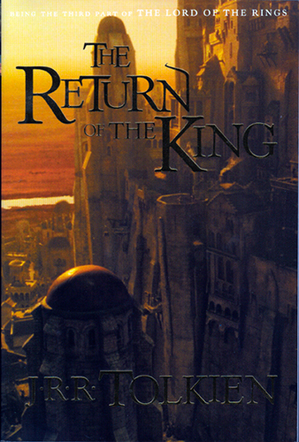

 The story begins as Gandalf delivers news to Denethor, the steward of Gondor, that war is imminent. Gandalf brings Pippin with him, who enters the service of the steward. Aragorn, by his courage and leadership, proves himself a worthy ruler of men. He is destined to find a lost army of men now dead yet entrapped in a curse set forth long ago by their own disobedience, in the place known as the Paths of the Dead.
The remnants of the Fellowship lead the forces of Gondor and Rohan in defence of Gondor's capital city, Minas Tirith, resulting in the cataclysmic Battle of the Pelennor Fields. Those characters who manage to survive the battle are led by Aragorn on an assuredly suicidal feint-attack against the Black Gates of Mordor, partly to distract Sauron from defending his other borders so that Frodo and Sam can gain a clear passage into Mordor. Aragorn's company now surrounds the Black Gates of the Morannon exchanging idle words with the Mouth of Sauron.
Chapters:
- I: Minas Tirith:
- Gandalf and Pippin arrive in Minas Tirith; they talk with Denethor; Pippin enters the service of the steward.
- II: The Passing of the Grey Company:
- Follows Aragorn, Legolas and Gimli as they pass through the Paths of the Dead between Rohan and Gondor.
- III: The Muster of Rohan:
- Rohan prepares for war; Merry heads off for Minas Tirith, on a horse with a rider who calls himself Dernhelm.
- IV: The Siege of Gondor:
- Back to Gandalf and Pippin, and the preparations of the city of Minas Tirith for the attack by the armies of Mordor; Minas Tirith is besieged; chapter ends with the gate of Minas Tirith broken, and the army of Rohan finally arriving.
- V: The Ride of the Rohirrim:
- The Rohirrim pass through the Druadan Forest with the aid of the wild men who live there, who are led by Ghan-buri-Ghan; the army arrives in Minas Tirith.
- VI: The Battle of the Pelennor Fields:
- Armies of Rohan and Gondor fight the armies of Mordor, Rhun and Harad as described in Battle of the Pelennor Fields; Merry and Eowyn together kill the chief of the Nazgûl, the Witch-king of Angmar.
- VII: The Pyre of Denethor:
- Denethor goes mad and tries to burn Faramir alive (believing him to be dead); he is saved by Gandalf; Denethor then sets fire to himself. They discover that Denethor has been using a Palantir.
- VIII: The Houses of Healing:
- Merry, Faramir, Éowyn and many others are injured and placed in the houses of healing; Aragorn uses kingsfoil to help treat the injured.
- IX: The Last Debate:
- Gimli and Legolas meet Merry and Pippin again; the captains of the west hold a counsel on their next action; they decide to send 7000 men against Mordor to march on the Black Gate.
- X: The Black Gate Opens:
- The army, with Gandalf, Aragorn, Gimli, Legolas and Pippin (but not Merry) marches to the Black Gate. The Mouth of Sauron comes out to discuss terms, and presents tokens, which were owned by Frodo; he then departs and the army of Mordor attacks them.